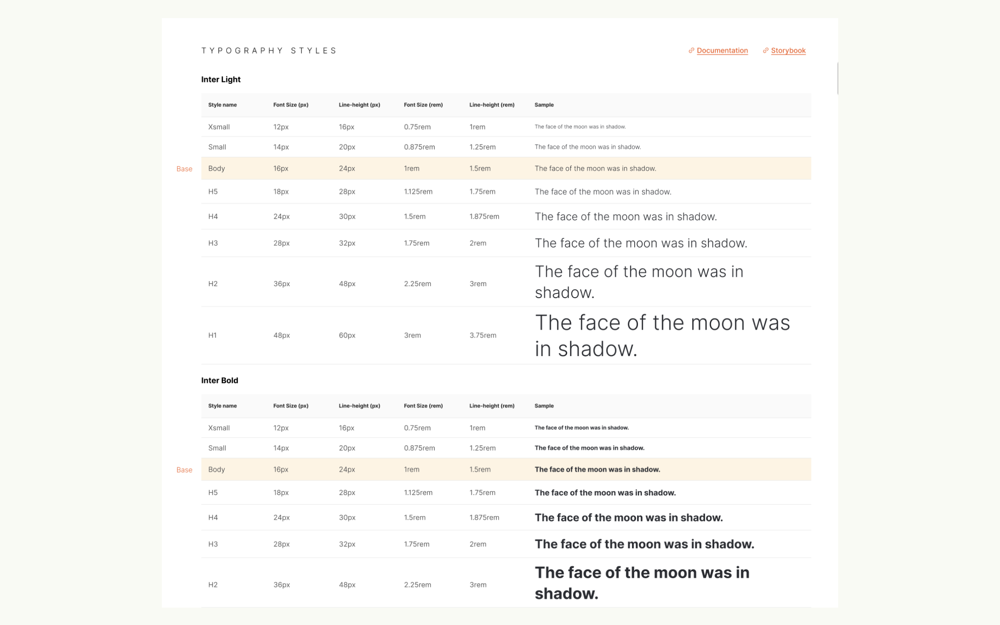
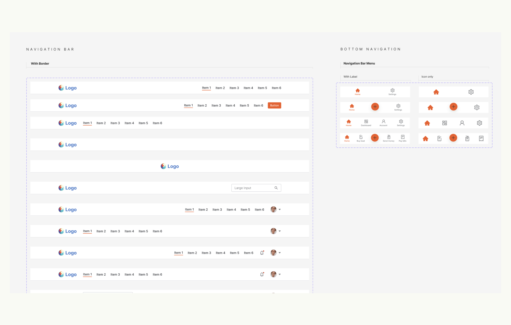

UBX Design System
Leading the creation of UBX’s first-ever design system. It has 70+ unique components and 1,500+ variations.
Summary
UBX has a wide variety of products in digital banking, digital wallet, marketplace, blockchain, insurance, loans, and it continues to build more products as it grows and acquire more clients and partners to build products for. As the leader in product design, my team and I worked together in building the company’s first design system to make us deliver output faster, make sure we don’t design and build from scratch every-time, and to have a single source of truth and standards for our designs.
•••
Case Study
•••
I. Identifying the Problem
No standardization and documentation in terms of design and development implementation of elements, components, or styles across all products in UBX.
No centralized library of common elements, components, or styles that can be reused across all ventures or products in UBX. Virtually everything has to be designed and implemented from scratch every-time.
•••
II. Challenges and Solutions
Leading a group of designers, scrum master, and front-end developers in creating the first version of our design system.
We treated our design system as any other projects in UBX back in 2021 when we started building it. My role was to be the Product Owner of the project, meaning, I have to create the product backlog items, assemble the team, manage the resources, research for the tools, define our workflow, and scope what we need to build for MVP and for future releases.
At that time, there were 5 product designers, including myself, 1 scrum master, and 2 front-end developers working part-time on the design system. We setup a Gitlab board for the project, observed the scrum ceremonies, and established a process flow specifically for the design system.
The process flow that we came up with. We defined this flow early in our development process.
Since it was our first time to build a design system, we researched on how others are doing it and made references from the following design systems as our guide:
- Chakra React Library
- Atlassian Design System
- Material Design by Google
- Ant Design
- Polaris by Shopify
- Encore by Spotify
•••
Managing our MVP and future releases
We collaboratively discussed what we think we need to build for the MVP and defined the foundation and core elements that exist in all of our existing products.
We created a mind-map using Whimsical to easily move things around and get an overview of what we need to build and what we have built so far. This is on top of our project’s Gitlab board.
As the acting P.O. I had to make sure that we have a well defined scope of what we are trying to build for its first launch. Aside from the MVP features, we also defined the scope for future releases.
I translate these individual items from the master list we created into product backlog items in our gitlab board complete with the WCAG 2.0 checklist as well as the team’s agreed standards and variations for each of the components.
Every end of month, we measure our progress and how much more we need to complete per release.
Designing, and documenting the foundations and components
Each of the components (e.g. button, input-field, accordion, etc.) are designed, documented, built, and tested against a set of standards we set as a team and based on the industry’s common best practices.
5 of the designers, including myself, divided the work and collaborated on designing each components based on the acceptance criteria that we set as a team during our backlog grooming and planning.
The components must adhere to the WCAG 2.0 that is applicable like the contrast ratio between font color and background color. Everything must also be customizable and have all the variations needed e.g. States, sizes, layout, color, etc.
We also built the design system in Figma in a way that the users, the designers, can easily search for and locate the component they need. The key to that is the proper naming of the art-board and component as well as how they are positioned inside each art-board.
All components are properly documented with guidelines on its design, measurements, behavior, context of use, and best practices.
Following are some of the foundations and components that we built. All components are highly customizable and has variants for size, state, and type.
Typography
Alert Component

Charts
Chips
Input Mobile
Navigation Bar
•••
Testing the designs against the WCAG 2.0 - Web Content Accessibility Guidelines 2.0
We use a plugin in Figma called “Stark” in order to set a range of background colors’ good contrast with either the dark or light text color. It must pass at least the “AA” contrast ratio for both the normal and large text sizes.

We use the WCAG 2 A and AA Checklist from Yale University for its organized list for the guidelines.
•••
Deploying and publishing the design system
For deployment and publication, we use an open-source tool called “Storybook”.
Putting the components in our storybook portal, https://design-system.storybook.ubx.ph/, made it possible for me to test the front-end implementation of each component based on the acceptance criteria. Having the library be publicly accessible using the storybook also made it easy for anyone, not just the developers and designers, to explore and appreciate the design system in an easy way.
•••
III. Conclusion
Having our own standardized and well documented design system has increased our designing productivity and this enabled us to focus more on other important aspect of product design such as development support, user-flows, usability testings, data analytics, competitive research analysis, research and business development through workshops and many more.
•••
IV. What Could Have Been Done Better
Since the building of the design system was an initiative from the Product Design Team, the designers had more resources allocated to the project than the developers. This caused the designs to get ahead of the development exponentially. The reception of building the design system and its value was well received by the company but it was deprioritized in terms of developer allocation and the development was stopped, thus, leaving our design system incomplete. The upper management’s support is crucial for the design system to be completed since it will cost money to develop.
•••
Background
Company:
Role:
Product Designer + Product Owner
Responsibility:
- Get the buy-in from the management to allocate resources to build the design system.
- Research and explore tools and processes to build the design system.
- Define the scrum team’s workflow process since it is a unique project that differs from the other projects we were handling.
- Manage the project’s deliverables and timeline.
- Define what needs to be built and drive the team of achieving our project’s goals.
- Write detailed acceptance criteria for each user-stories and prioritize the product backlog items.
- Review and test each of the user-stories for bot the design and development output.
Team Mates:
- Yayay de Castro | Design Tech Lead
- Robbie Bautista | Documentation Lead
- Marc Anthony Aguila | Design Contributor
- Josiah John Diaz | Design Contributor
- Drew Camero | Scrum Master
- Arthur Abon | Front-end Tech Lead
- Gene Ryan Llanto | Front-end Developer
•••
For it is God who works in me,
both to will and to work for his good pleasure. - Phi 2:13